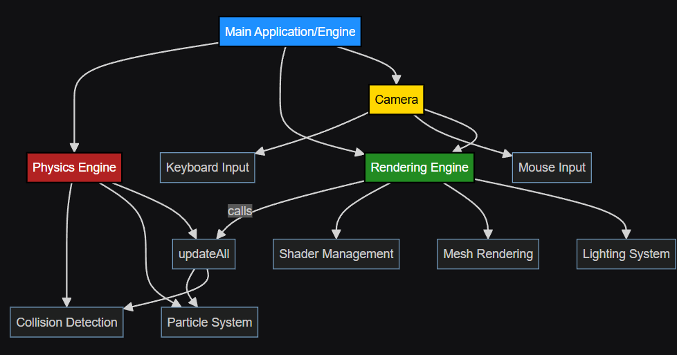
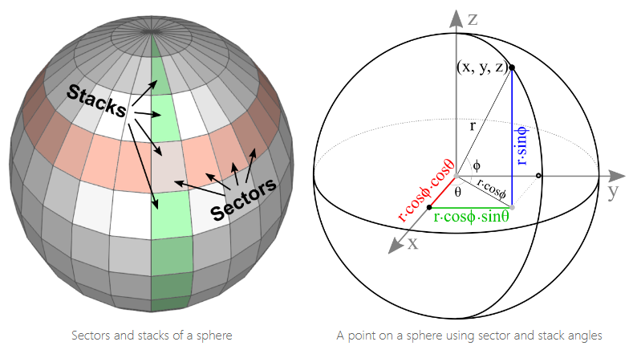
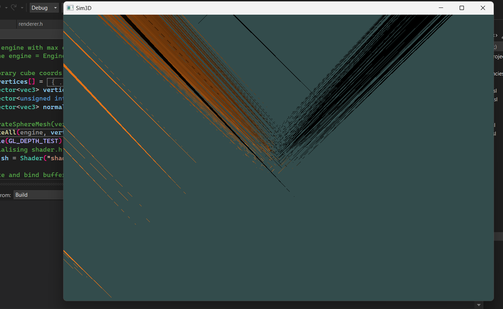
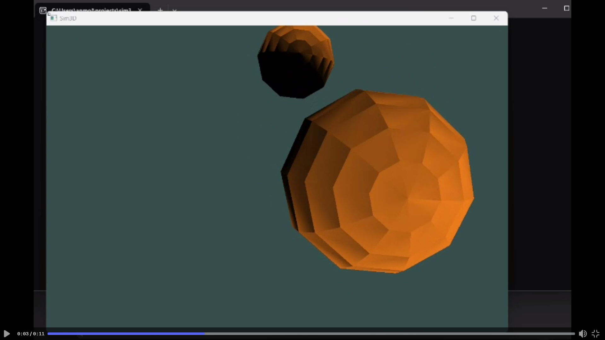

Welcome to the development log for Phase 1 of Sim3D, a 3D particle simulation engine built from scratch using C++ and OpenGL. This devlog chronicles the journey from initial setup to a functioning particle system with basic physics and rendering capabilities.
Sim3D is designed to simulate particles in a 3D environment, allowing for particle collision, movement, and interactive visualization. The project aims to create a robust foundation for more complex simulations in later phases.
Setting up Visual Studio for OpenGL and configuring necessary libraries such as GLFW, GLAD, and GLM. Designing the application architecture for better organization and easier feature implementation.
Creating the core physics engine, including particle handling, collision detection, and resolution. Overcoming challenges like linker errors and optimizing collision calculations.
bool isCollision(particle& p1, particle& p2) {
if (&p1 == &p2)
return false;
return dot(p1.pos - p2.pos, p1.pos - p2.pos) <= ((p1.size + p2.size) * (p1.size + p2.size));
}void Engine::updateall() //this is the main function that gets called in infinite loop
{
particles.push_back(particle(glm::vec3(1), 1.0f));
//call particle.update() for every element in array
for (int i = 0; i < particles.size(); i++){
particles[i].update(tconst);
particles[i].velocity += globalAcc;
}
//call collision handling functions after updation
checkCollision(particles);
}Implementing sphere mesh generation for rendering particles as spheres, including vertex and normal calculations, and overcoming rendering challenges.
  Combining rendering with the physics simulation, applying MVP matrices, implementing basic shaders, and adding a camera system for scene navigation.
Iteratively refining the simulation, fixing collision issues, improving visual quality, and adding user controls.
[Discuss any performance optimizations or considerations you made during Phase 1]
Phase 1 of Sim3D has laid a solid foundation for our 3D particle simulation engine. We've successfully implemented basic rendering, a functional physics engine, and particle interactions.
Make sure to checkout the GitHub repo if you want to follow our progress or try Sim3D yourself.
sim3d/
├── shader/
├── src/
│ ├── include/
│ ├── lib/
│ ├── Engine.cpp
│ ├── Engine.h
│ ├── camera.h
│ ├── collision.cpp
│ ├── collision.h
│ ├── glad.c
│ ├── gui.cpp
│ ├── main.cpp
│ ├── particle.cpp
│ ├── particle.h
│ ├── renderer.cpp
│ ├── renderer.h
│ └── shader.h
For more information on OpenGL and graphics programming, check out: